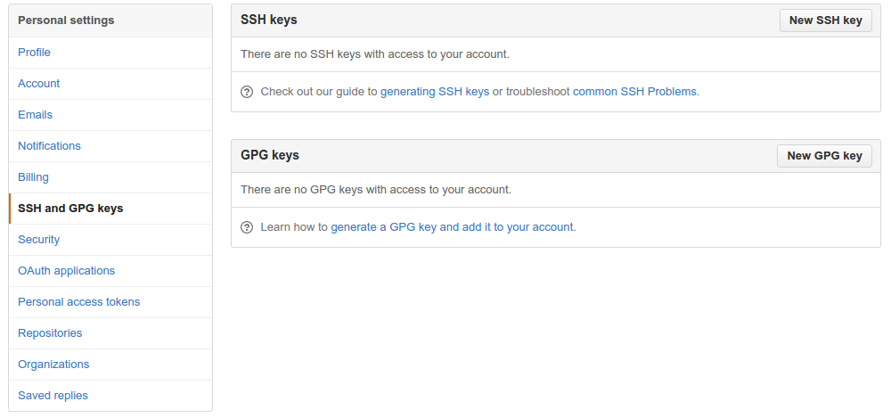
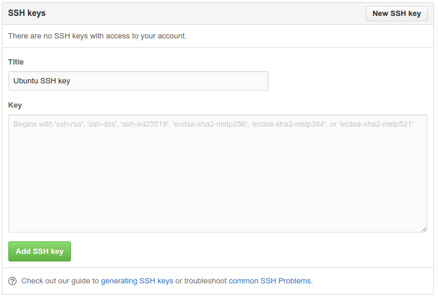

Публикация Pelican блога на Github pages
- By phonxis
- нд 03 липень 2016
Pelican это генератор статических сайтов, которому не нужна ни база данных, ни серверная бизнес логика. Для написания контента для сайта, может использоватся reStructuredText, Markdown или AsciiDoc форматы, которые очень легки в использовании.
Github является наиболее популярным сервисом для хранения открытого исходного кода. Github pages дает возможность пользователям хранить страницы с контентом в репозитарии вместе с исходным кодом.
Настройка страницы github.io
Чтобы создать страницу пользователя на github, нужно создать два новых репозитария, username.github.io-src и username.github.io как описано на Github pages.(Используйте имя пользователя Github вместо username) Репозитарий username.github.io-src будет хранить исходный код вашего сайта/блога, а username.github.io будет содержать только HTML файлы сайта, которые будет генерировать Pelican.
Установка Pelican
На Fedora нужно выполнить всего лишь одну комманду:
sudo dnf install python-pelican
На Ubuntu:
sudo apt-get install python-pelican
Или с помощью pip:
pip install pelican
Также нам может понадобится Markdown, если вы выберете его вместо reStructuredText или AsciiDoc:
pip install Markdown
Склонировать репозитарий также не составит особого труда:
git clone git@github.com:username/username.github.io-src ghpages
где username имя пользователя github, а ghpages - имя локальной папки куда будет склонирован репозитарий.
Если вы до сих пор ниразу не пытались клонировать репозитарий командой указаной выше, у вас скорее всего ничего не получится, потому что сервере не зарегистрирован ваш публичный ssh ключ, который находится в директории
(windows) C:\Users\USER\.ssh\id_rsa.pub
(linux) /home/USER/.ssh/id_rsa.pub
Проблема с клонированием исчезнет, когда вы укажете серверу ваш ключ. Подробно о том как это сделать можно посмотреть тут. Но если вкратце, то нужно выполнить эти команды:
# проверка есть ли у вас публичный ключ
# при наличии ключей будет выведен их список
ls -al ~/.ssh
# если ключей нет, то их можно создать коммандой
# где email указывается как метка этого ключа
ssh-keygen -t rsa -b 4096 -C "ваш_emain@example.com"
# далее появится это сообщение, где просто нужно нажать Enter
Enter a file in which to save the key (/home/you/.ssh/id_rsa):
# далее нужно ввести passphrase(пароль) и подтвердить его
Enter passphrase (empty for no passphrase): [Type a passphrase]
Enter same passphrase again: [Type passphrase again]
# добавим пароль в ssh-agent
eval "$(ssh-agent -s)"
ssh-add ~/.ssh/id_rsa
# далее этот ключ нужно добавить в ваш github аккаунт
# для возможности скопировать ключ в буфер обмена,
# нужно установить xclip
(Ubuntu) sudo apt-get install xclip
(Fedora) sudo yum install xclip
# скопировать в буфер можно командой:
xclip -sel clip < ~/.ssh/id_rsa.pub
далее, заходим в настройки github аккаунта, жмякаем на кнопку "New SSH key", заполняем поля с названием для ключа (например "ssh ключ на ubuntu") и самим ключом (вставляем из буфера Ctrl+C). Ну и конечно же сохраняем это.


Всё, теперь с клонированием репозитария проблем быть не должно. Просто заходим в новосозданную директорию:
cd ghpages
Установка блога с помощью Pelican
Проверьте репозитарий с которым вы работаете:
git remote -v
Вы должны увидеть username.github.io-src репозитарий. Если это так, то тпереь вы должны клонировать output репозитарий как подмодуль:
git submodule add git@github.com:username/username.github.io.git output
Для старта pelican проекта, нужно использовать комманду:
pelican-quickstart
Эта комманда задаст вам вопросы, на которые вы должны будете ответить. Вот мои ответы на некоторые из этих вопросов:
-
-- Where do you want to create your new web site? Помните ми выполняли команду cd ghpages? тогда нам нужно будет написать в ответ точку - ., если вы не выполнили ее, тогда указываем эту папку - ghpages
-
-- Do you want to specify a URL prefix? e.g., http://example.com y.
-
-- What is your URL prefix? http://USERNAME.github.io
-
-- Do you want to generate a Fabfile/Makefile to automate generation and publishing? y
-
-- Auto-reload & simpleHTTP script: y
-
-- Upload to dropbox, S3 и других хостингов отвечаем n, только для Github Pages отвечаем y
-
-- Is this your personal page (username.github.io)? y
После ответа на все вопросы, будет оповищение об ошибке. Так и должно быть, так как директория output у нас была создана ранее.
Теперь откройте publishconf.py и укажите переменной DELETE_OUTPUT_DIRECTORY значение False. Если мы этого не сделаем, то каждый раз при публикации, Pelican будет удалять наш подмодуль(директория output).
Улучшалки
Существуют различные хитрости и советы (tips-n-tricks), которые во многих случаях могут быть полезны. Например одна из удобных фич - добавление нового поста к блогу с помощью команды newpost Makefile-а.
Первый пост
Создайте свой первый пост с помощью Markdown или reStructured Text в директорию content.
Постройте, закоммитьте, запуште!
Сначала постройте ваш блог и протестируйте результат:
make html
make server
После этих комманд будет создан блог и запущен локальный сервер(порт 8000). Можете зайти через браузер на localhost:8000 и проверить работоспособность. Если все нормально, то следующей коммандой нужно сгенерировать вебсайт:
make publish
После этого просто добавте содержимое директории в индекс, закоммитьте их и запуште в репозитарий. из-за того что был использован подмодуль, сначала вы должны сделать это для директории output.
# пуш файлов в username.github.io репозитарий
cd output
git add .
git commit -m "First post"
git push -u origin master
# пуш файлов в username.github.io-src репозитарий
cd ..
echo '*.pyc' >> .gitignore
git add .
git commit -m "First commit"
git push -u origin master
Документация Pelican-а версии 3.6.0 ссылается на инструмент с названием ghp-pages, но он не работает на Fedora 22 как описано в документации. Использование подмодуля решает эту проблему.